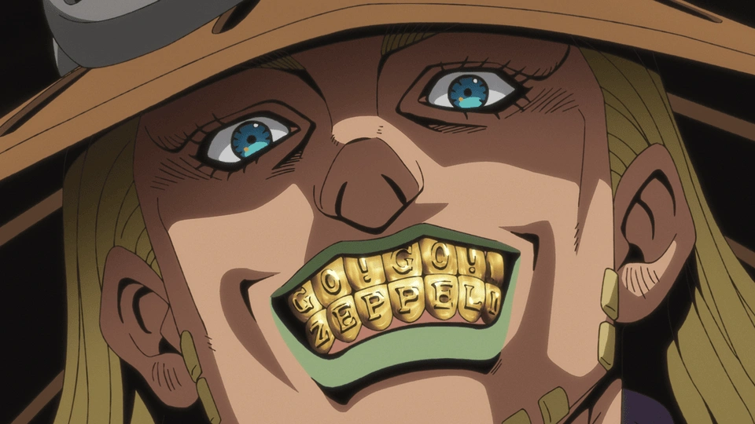
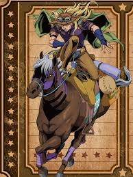

Gyro Zeppeli

The race and the mission
Gyro Zeppeli is a royal executioner from Naples who entered the Steel Ball Run to save a young boy from a death sentence. He paid the $1,200 USD entry fee with support from the kingdom, which viewed the race as a political opportunity.

The power of the Spin
Gyro was one of the few competitors with the training and discipline to use the Spin. By throwing his steel balls with precise rotation, he could influence movement and balance, making him one of the most dangerous riders among the 1,500 participants.

Gyro and Valkyrie
The race lasted 50 days. Gyro relied on his horse, Valkyrie, to cross the challenging terrain of the United States. Along the way, he became a mentor to Johnny Joestar, and the two changed the course of the race.